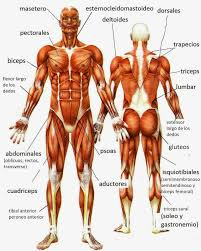

Sistema muscular
Regresar
El sistema muscular permite que el esqueleto se mueva, se mantenga firme y también da forma al cuerpo. En los vertebrados los músculos son controlados por el sistema nervioso, aunque algunos músculos (tales como el cardíaco) pueden funcionar de forma autónoma. Aproximadamente el 40 % del cuerpo humano está formado por músculos, es decir, que por cada kilogramo de peso total, 400 g corresponden a tejido muscular.